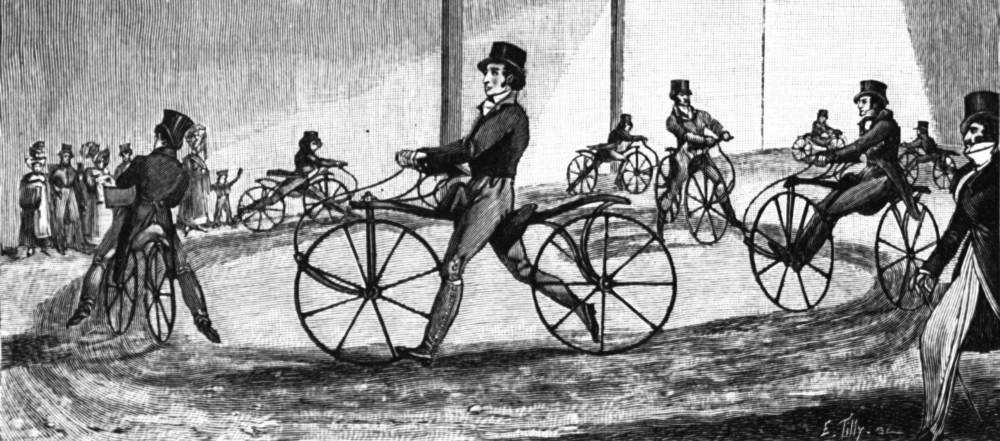
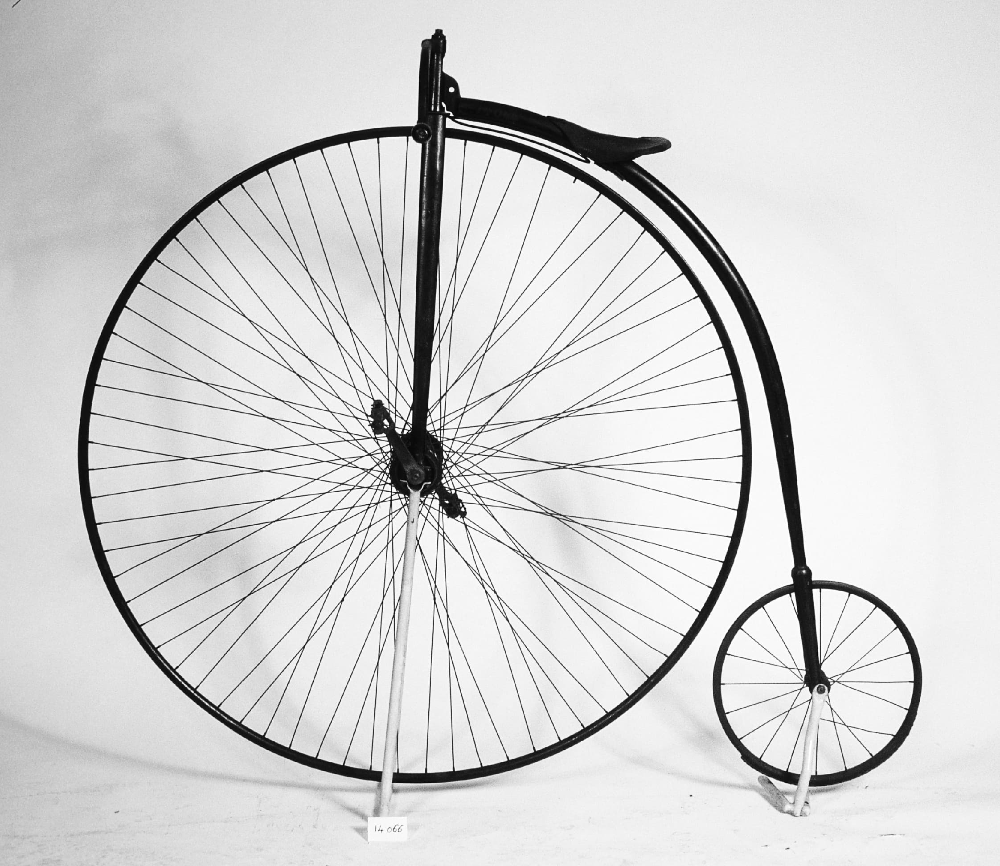
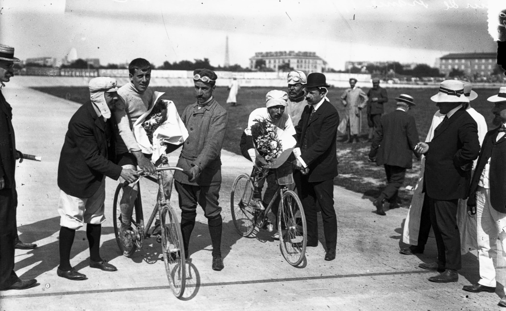

Le Musée des arts et métiers de Paris présente une intéressante collection de vélos. Des anciens vélocipèdes du XIXe siècle aux VTT contemporains, une quinzaine de modèles s’y côtoient, présentés chronologiquement.
Quelle impression produit cet alignement de véhicules à deux roues parfois surprenants, comme le grand-bi Rudge avec sa roue avant démesurée ? L’évolution retracée paraît linéaire et continue, à la manière des musées d’histoire naturelle. Les modèles semblent se succéder, comme mus par un progrès sous-jacent suivant lequel la technique s’améliorerait perpétuellement. Poussant la logique à l’extrême, on pourrait presque y discerner un principe téléologique, comme si le vélo avait été appelé à advenir sous la forme qu’on lui connaît aujourd’hui.
Des sociologues de la technique ont montré que l’histoire du vélo a au contraire été faite d’allers-retours, d’impasses, de contingences, donnant à l’ensemble un caractère complexe et buissonnant. Pour les sociologues Trevor J. Pinch et Wiebe E. Bijker, elle ne peut se comprendre sans les conditions sociales de son développement, qui ont conduit à des choix technologiques particuliers. Leur étude, devenue une référence dans leur domaine, prend le contre-pied des analyses les plus fréquentes qui se centrent sur l’impact social des technologies. Ils écrivent une histoire conjointe des innovations techniques et des publics s’y rattachant, les évolutions du vélo ne pouvant s’expliquer sans prendre en compte les enjeux des groupes sociaux qui le façonnent.
Dans les premiers temps, on ne parle pas encore de « vélo » ni de « bicyclette » mais de ≪ draisienne ≫ en France et de dandy horse en Grande-Bretagne. Conçue par le baron
allemand Karl Drais von Sauerbronn durant les années 1810 et mise au point en 1817, la draisienne n’a pas de pédalier : il faut, comme sur une trottinette, frapper le pied sur le sol pour avancer. Elle suscite l’engouement des cercles élitistes avant d’être rapidement abandonnée. Il s’agit davantage d’un jeu que d’un moyen de transport.
Au tournant des années 1860, l’idée d’un véhicule à deux roues revient au goût du jour, avec l’apparition du vélocipède. Plus tard abrégé en « vélo », il présente une innovation technologique majeure : le pédalier. Cette invention est l’œuvre de deux serruriers français, Pierre et Ernest Michaux. Grâce à elle, le vélocipède gagne beaucoup en stabilité et en vitesse – d’ailleurs, l’étymologie du mot « vélo » renvoie à la vélocité. L’invention a beau susciter moqueries et caricatures, elle fait sensation lors de l’Exposition universelle de 1867, durant laquelle la première course officielle est organisée sur les Champs-Élysées. Les courses contribuent fortement à rendre le vélo populaire. Surtout, elles font naître l’un des groupes sociaux appelés à jouer un rôle important dans la transformation de cet objet technique : les cyclistes sportifs.
À cette époque, le vélocipède présente encore de lourds inconvénients. Les pédales sont fixées directement sur les roues, ce qui rend les longues distances épuisantes et l’accélération difficile. Mais le principal problème est celui du confort et de la sécurité. L’absence de ressort et de suspension provoque des vibrations incessantes, encore accrues par le mauvais état des routes, tandis que les roues pleines, en bois ou en métal, n’assurent aucun amorti.
Pour y faire face, on tente d’abord, durant les années 1870, d’agrandir la taille de la roue avant. C’est le principe des grands-bis dont l’image est bien connue. L’objectif est également de gagner en vitesse, car chaque tour de roue permet de parcourir une distance plus grande. Mais le grand-bi tombe vite en désuétude. La roue avant ne remédie pas vraiment aux vibrations, ni n’améliore l’accélération, et rend l’engin dangereux. On revient alors à des roues de taille égale, signe que l’évolution technique du vélo n’a pas suivi un tracé linéaire.
Durant les années 1880, deux innovations majeures transforment le vélo, qui atteindra son âge d’or pendant la Belle Époque. La première innovation est la chaîne, qui permet une traction par la roue arrière et augmente grandement l’efficacité des pédales et la stabilité de l’appareil. La seconde est l’apparition des pneumatiques en caoutchouc remplis d’air. Pour Pinch et Bijker, c’est l’innovation déterminante car elle implique la stabilisation de la technologie du vélo, ce moment où les groupes sociaux concernés considèrent que le problème technique auquel ils faisaient face est résolu. Contrairement à une idée reçue, ce n’est pas forcément la meilleure solution technique qui est retenue. Comme nous allons le voir, la résolution des problèmes est avant tout un compromis entre différents collectifs impliqués.
Le problème originellement soulevé est celui des vibrations. Pour les producteurs de pneus comme Dunlop et Michelin, il est alors prioritaire de le résoudre car il limite l’utilisation du vélo par un public large. Mais les fabricants de vélos sont réticents à modifier leurs méthodes de production. Quant aux sportifs, ils se préoccupent surtout de vitesse : les vibrations ne sont pas perçues comme un inconvénient et ils apprécient les sensations fortes qu’elles procurent pendant les courses.
L’introduction des pneus est d’abord reçue avec raillerie, tant par les fabricants que par les utilisateurs. On les affuble de surnoms peu flatteurs comme les « roues vessies » ou les « bandages-saucisses ». Mais lorsqu’ils sont utilisés pour la première fois en course, ils provoquent la surprise générale : le gain de vitesse est tel que, très vite, tous les sportifs les adoptent. La stabilisation de la technologie a donc lieu au moment où le sujet principal se déplace de celui des vibrations à celui de la vitesse. Les coureurs, jusqu’alors les plus réticents, deviennent les promoteurs des pneus auprès du grand public.
Ainsi la transformation des objets ne suit-elle en rien une évolution naturelle ou logique. Les problèmes et leurs solutions techniques s’insèrent au contraire dans un tissu social singulier. Ajoutant à l’étude de l’évolution des techniques celle de la recomposition simultanée des groupes sociaux, la sociologue Madeleine Akrich invite à reconsidérer radicalement les relations entre techniques et sociétés et affirme que :
Une innovation réussie réalise l’ensemble des hypothèses sur lesquelles son développement s’est appuyé et attribue, en les naturalisant, des propriétés à la fois aux dispositifs et aux humains : c’est ainsi que, dans ce modèle, doit se comprendre le rôle de la technique dans la fabrication de nos sociétésVoir bibliographie..
Pamela Schwartz et Thomas Tari
Bibliographie
AKRICH Madeleine, « Comment sortir de la dichotomie technique/société. Présentation des diverses sociologies de la technique », dans Bruno Latour et Pierre Lemonnier (dir.), De la préhistoire aux missiles balistiques. L’intelligence sociale des techniques, Paris, La Découverte, 1994, p. 105-131.
DODGE Pryor, La Grande Histoire du vélo, Paris, Flammarion, 1996.
PINCH Trevor J. et BIJKER Wiebe E., « The Social Construction of Facts and Artefacts : Or How the Sociology of Science and the Sociology of Technology Might Benefit Each Other », Social Studies of Science, 14 (3), 1984, p. 399-441.

Manège de draisiennes, Londres (1819). Source : Musée des arts et métiers – Cnam.

Le grand-bi Rudge (1887). Photo : M. Favareille, Musée des arts et métiers – Cnam.

Tour d’honneur du Tour de France (1906). Source : Bibliothèque nationale de France.